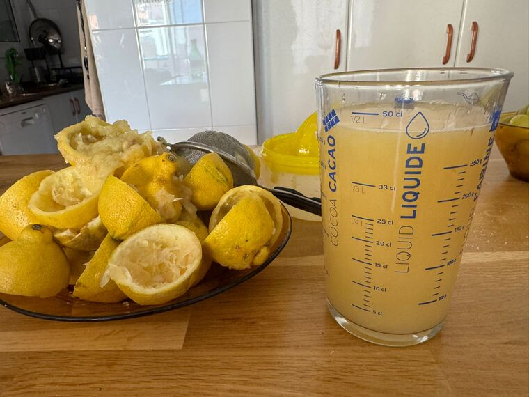
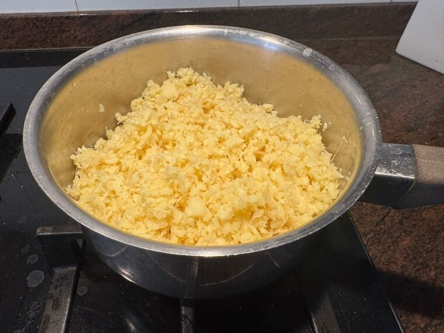
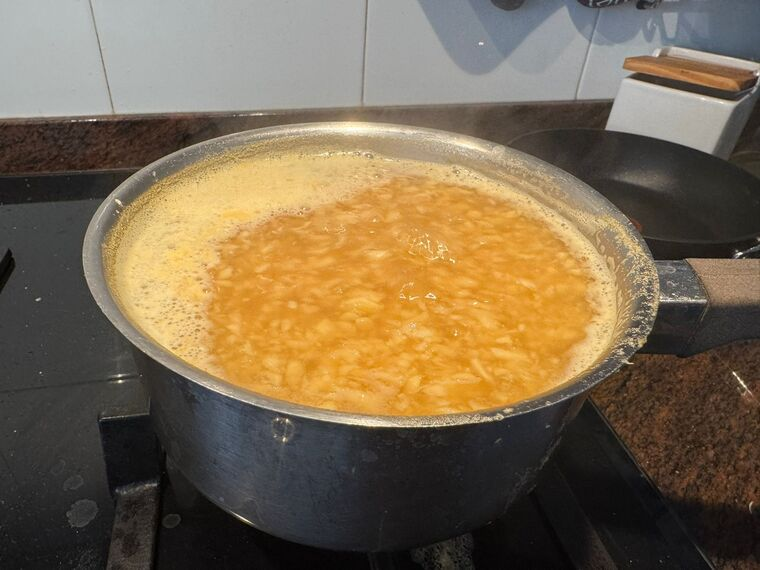
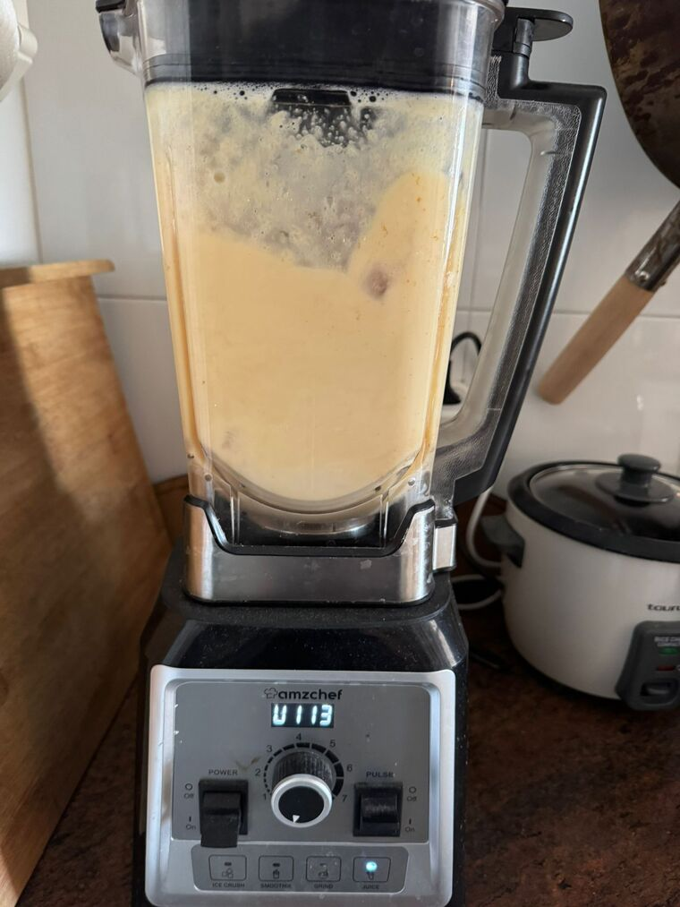

Lemon Ginger Syrup
Ingredients
20×
- 0.5 l of lemon juice
- 300 g of fresh ginger
- 0.5 l of water
- 100 g of sugar
Preparation
Step 1
Squeeze 0.5 l of lemon juice.

Step 2
Peel 300 g of fresh ginger and grind it in a food processor.

Step 3
Simmer the mixture over low heat with 0.5 l of water and 100 g of sugar.

Step 4
Blend the result.
